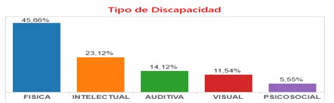

La discapacidad física o motora es uno de los grandes desafíos para los educadores, podemos hallar en el aula alumnos con tipos muy diferentes de discapacidades motoras, cuyas necesidades serán muy diferentes de unos a otros. La discapacidad pueden ser cambios del sistema óseo, articular, nervioso y/o muscular, frenando, en algunos casos, ejecutar acciones de la vida diaria. Estos serían los tipos de discapacidad motora en niños más habituales que el educador se puede enfrentar.
En el grafico observamos que en Ecuador el 45,66% de discapacidad la cubre las discapacidades físicas, estas se dan cuando una persona tiene un estado físico que le impide de forma permanente e irreversible moverse con la plena funcionalidad de su sistema motriz, locomotor, e incide fundamentalmente en las extremidades, aunque asimismo puede surgir como una deficiencia en la movilidad de la musculatura esquelética
Más de un 80% es ocurrida después del nacimiento por contextos comunes y accidentes de todo tipo, de manera menor, estas afectaciones pueden causarse durante el embarazo, o inconvenientes genéticos.
Existen discapacidades físicas orgánicas las que afectan a la cabeza, la columna vertebral y las extremidades inferiores y superiores; afectación de órganos y vísceras a las que afectan a los aparatos respiratorio, cardiovascular, digestivo y urinario y a los sistemas metabólico e inmunológico; y pérdidas de las estructuras musculares afines con el movimiento de las extremidades.
La monoplejía, que es la parálisis de una única extremidad; la paraplejia, que supone la parálisis en la mitad inferior del cuerpo; la tetraplejia, la pérdida de movilidad en todas las extremidades y la hemiplejia, la parálisis de un lado del cuerpo.
La discapacidad motora puede ocasionarse por una condición genética, como en el caso de la fibrosis quística, o debido a accidentes y amputaciones, otras veces pueden surgir como condiciones que afectan al cerebro, a la médula espinal o la propia musculatura.
En la institución educativa se dan barios modificaciones como son, la eliminación de escaleras, bordillos, accesos estrechos, peligrosos o mal diseñados que entorpezcan el acceso, se realizara ajustes físicos como manillas en las puertas, pasamanos en pasillos y escaleras, ascensor, modificaciones en el baño, que faciliten al estudiante un mejor y más cómodo acceso y uso de las instalaciones.
Es preciso adaptar mesas y sillas, utilizar reposapiés, asientos pélvicos hechos con yeso y adecuados al cuerpo del individuo, sirven para hacer la sedestación funcional, colchonetas, rulos, cuñas, utilizar diferentes órtesis o férulas posturales, que conserven las extremidades en el lugar adecuada.
Disponer los recursos didácticos y el mobiliario de manera que se facilite la movilización del estudiante, sencillos arreglos del material didáctico y útiles escolares agrandan las posibilidades de utilización del estudiante. Es necesario conocer el grado de prensión de cada uno y qué tipo de modificación se puede realizar.
En caso de que el estudiante no pueda acceder al teclado y al ratón de una computadora, suministrar, teclados y ratones alternativos, para el aprendizaje de la lecto-escritura, son de gran utilidad los abecedarios magnéticos y de madera, letras con surco, incluso las tablets, considerar el uso de utensilios adaptados para la comida, higiene y vestido.